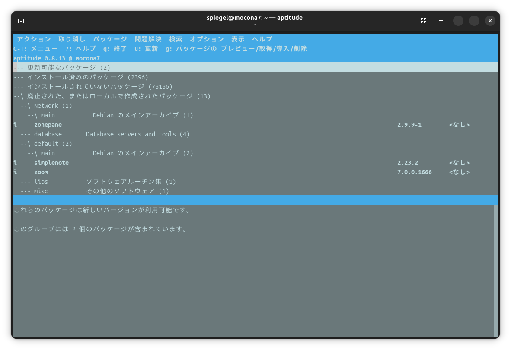

Aptitude コマンドの導入

aptitude というコマンドがある1。
依存関係解決能力に優れていて apt コマンドの代わりとして使えるようだ（同じパッケージデータベースを使う）。
さっそく導入してみよう。
$ sudo apt install aptitude
$ aptitude help
aptitude 0.8.13
使用方法: aptitude [-S ファイル名] [-u|-i]
aptitude [オプション] <アクション> ...
アクション (指定がない場合、aptitude はインタラクティブモードで起動します):
install パッケージをインストール/更新します。
remove パッケージを削除します。
purge パッケージと設定ファイルを削除します。
hold パッケージを固定します。
unhold パッケージの固定を解除します。
markauto 自動的にインストールされたという印をパッケージにつけます。
unmarkauto 手動でインストールされたという印をパッケージにつけます。
forbid-version aptitude に特定のパッケージバージョンの更新を禁止させます。
update 新規/更新可能なパッケージの一覧をダウンロードします。
safe-upgrade 安全な更新を行います。
full-upgrade パッケージのインストールや削除を伴う可能性のある更新を行います。
build-dep パッケージの構築依存関係をインストールします。
forget-new どのパッケージが "新規" かの情報を消去します。
search 名前や正規表現でパッケージを検索します。
show Display detailed info about a package.
showsrc Display detailed info about a source package (apt wrapper).
versions 指定したパッケージのバージョンを表示します。
clean ダウンロード済みのパッケージファイルを消去します。
autoclean 古いダウンロード済みのパッケージファイルを消去します。
changelog パッケージの変更履歴を表示します。
download Download the .deb file for a package (apt wrapper).
source Download source package (apt wrapper).
reinstall 現在インストールされているパッケージを再インストールします。
why 特定のパッケージをインストールする必要がある理由を表示します。
why-not 特定のパッケージをインストールすることができない理由を表示します。
add-user-tag パッケージ/パターンにユーザタグを追加します。
remove-user-tag パッケージ/パターンからユーザタグを削除します。
オプション:
-h このヘルプの文章です。
--no-gui 利用可能でも GTK GUI を使いません。
-s アクションのシミュレートのみ行い、実際には実行しません。
-d パッケージのダウンロードのみ行い、インストールや削除は
行いません。
-P アクションの確認のため、常にプロンプトを出します。
-y すべての yes/no の質問に対して 'yes' と答えたと見なします。
-F フォーマット 検索結果の表示フォーマットを指定します。マニュアルを参照し
てください。
-O 順序 検索結果の並び替えを指定します。マニュアルを参照してくださ
い。
-w 幅 検索結果の表示フォーマットの幅を指定します。
-f 依存関係が壊れたパッケージを積極的に修復しようとします。
-V パッケージのどのバージョンがインストールされるか表示します。
-D 自動的に変更されたパッケージの依存関係を表示します。
-Z 各パッケージのインストールサイズの変更を表示します。
-v 付加的な情報を表示します (何倍もの情報が提供されます)。
-t [リリース] パッケージをインストールするリリースを指定します。
-q コマンドラインモードで、進行状況の逐次表示を抑制します。
-o キー=値 'キー' の名前の設定オプションを直接設定します。
--with(out)-recommends 推奨パッケージを強い依存関係として扱うかどうかを
指定します。
-S ファイル名 ファイルから aptitude の拡張状態情報を読み込みます。
-u 起動時に新しいパッケージ一覧をダウンロードします。
(端末インタフェースのみ)
-i 起動時にインストールを行います。
(端末インタフェースのみ)
すべてのオプションの完全なリストと説明については、マニュアルページを参照してください。
この aptitude にはスーパー牛さんパワーなどはありません。
ゴメン。
最後の1文は分からない。
試しに aptitude パッケージ自身を search してみよう。
$ aptitude search aptitude
i aptitude - 端末ベースのパッケージマネージャ
v aptitude:i386 -
i A aptitude-common - architecture independent files for the aptitude package manager
v aptitude-doc -
p aptitude-doc-cs - 端末ベースのパッケージマネージャ aptitude 用チェコ語マニュアル
p aptitude-doc-en - English manual for aptitude, a terminal-based package manager
p aptitude-doc-es - 端末ベースのパッケージマネージャ aptitude 用スペイン語マニュアル
p aptitude-doc-fi - 端末ベースのパッケージマネージャ aptitude 用フィンランド語マニュアル
p aptitude-doc-fr - 端末ベースのパッケージマネージャ aptitude 用フランス語マニュアル
p aptitude-doc-it - Italian manual for aptitude, a terminal-based package manager
p aptitude-doc-ja - 端末ベースのパッケージマネージャ aptitude 用日本語マニュアル
p aptitude-doc-nl - Dutch manual for aptitude, a terminal-based package manager
p aptitude-doc-ru - Russian manual for aptitude, a terminal-based package manager
p aptitude-robot - Automate package choice management
先頭の3文字が各パッケージの状態を表している。 先頭文字の
iはインストールされていることを表すpはインストールされていないことを表す（purge 状態）cはインストールされてないが設定が残ってる状態（remove 状態）vは仮想パッケージ（インストール対象外）Bは依存関係が壊れている状態
2文字目は予約されているアクションで，空白は予約なしの状態を指す。
3文字目に A が付いてるものは依存関係によって自動的にインストールされていることを示す。
update および install アクションの使い方は apt コマンドと同じかな。
remove や purge アクションも同じ。
カーネルアップグレード後によく使う apt autoremove は aptitude では autoclean アクションを使えばいいのかなaptitude safe-upgrade で古いバージョンのカーネルイメージを削除してくれる。これは有り難い。
いわゆる dry run は -s オプションでできるみたい。
apt upgrade については aptitude safe-upgrade で行う。
$ sudo aptitude safe-upgrade
ディストリビューションのバージョンを上げるときに使う full-upgrade アクションは同じようだ。
aptitude コマンドでは，インストール時などに依存関係の競合が発生すると複数の解決策を提示する場合があるらしい（まだ遭遇してない）。
安直に y キーを押さずに，提示された解決策を確認してから選択するのがよさそうだ。
引数なしで aptitude コマンドを起動すると TUI モードで起動する。

{kind=link}
おー。 これはよさげ。 パッケージ毎に（依存関係の解決を含めた）細かい操作をする場合には便利かも。 なぜか TUI モードではマインスイーパーで遊べる。
参考

- スーパーユーザーなら知っておくべきLinuxシステムの仕組み
- Brian Ward (著), 柴田 芳樹 (翻訳)
- インプレス 2022-03-08 (Release 2022-03-08)
- 単行本（ソフトカバー）
- 4295013498 (ASIN), 9784295013495 (EAN), 4295013498 (ISBN)
- 評価
版元で PDF 版が買える。セキュリティ・エリアにも持ち込めるよう紙の本を買ったのだが，オンライン読書会が始まったので PDF 版も購入。Linux システムの扱い方に関するリファレンス本として優れている。最初に軽く流し読みして，必要に応じて該当項目を拾い読みしていけばいいだろう。
-
“aptitude” (apt + tude) は才能や適性を指す言葉で，ラテン語の “aptus” (適切な，適合した) に由来するそうな。同じ由来の類義語に adapt/adaptation などがある。
aptコマンドは “Advanced Package Tool” の略称だけど “apt” からのこじつけかなとか思ったり。（参考: 語根「apt」＝「fit (適当な) 」を覚えろ！） ↩︎